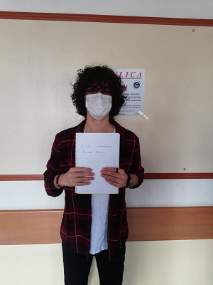

Erkan Aygün
Kimim Ben:
Herkese merhaba.Ben tarih hocası Erkan Aygün.Kırkkale Üniversitesi Eğitim Fakültesi mezunuyum.3 senedir amatör olarak tarih dersi vermekteyim.
Tarihe küçüklükten beri ilgi duymuşumdur bu yüzden dersleriminde öğrencilerimde ilgi uyandırmasını isterim.Tarih dersi her öğrenciye eğlenceli gelmesede
eğlenceli yapmak için gerek geziler gerek belgesellerden sık sık faydalanırım.100'ü aşkın öğrenciyi tarih dersinde başarıya ulaştırdım.Neden sende bu
öğrencilerden biri olmayasın.Benim derslerimi aldıktan sonra anlamadım kelime artık senin için olmayacak.
Dersimin içeriği
-
Genel Türk tarihi
-
Beylik Dönemi (1299 ve öncesi)
-
Kuruluş Dönemi (1299-1453)
-
Yükselme Dönemi (1453-1579)
-
Duraklama Dönemi (1579-1699)
-
Gerileme Dönemi (1699-1792)
-
Dağılma Dönemi (1792-1922)